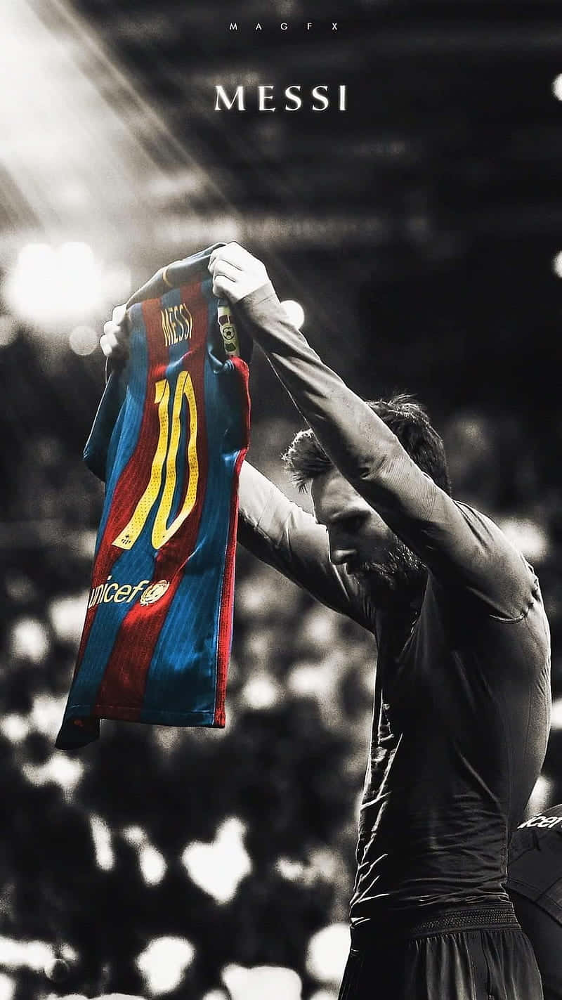

Fixing electronics
Fixing electronics has been always my passion still now. I don't know exactly know when I got in to electronics but I remember when I messed up our 35 inch TV and hiding from my mom 🙃. Step by step, I was able to fix electronic devices that were out of function. When I was 14, I already knew the basics of how to fix a computer motherboard. The passion for electronics still derives me to work on different electronic projects like microprocessor programming and others.
Penetration testing
Learning and practicing ethical hacking within my own lab is the most satisfying and a silent time for thinking critically. It is so much fun practicing the things I learn, being on a silent place and thinking the logic of computer systems, sitting in the dark with only moonlight shining on my bedroom was my noble times of my age. I work for the INSA(Information Network Security Agency) now, but after work, I have my own computer lab and networK to advance my skills in penetration testing.
Watching and playing soccer
Playing football was my hobby in my childhood, but growing up, I slowly became a spectator. Stopped Playing week days other than weekends. I am not a fan of a single club, I'm not in to the league staff. But I really like watching short vidoes showing plays of legends, tactics, records broken in soccer history, and other things. I like watching pele and maradona from the old times, and Messi and ronaldo from the golden times of football.But When it comes to choosing between these legends, I am absolutley a Messi fan with respect for other players.
Watching movies
This is also the thing that I really enjoy. Science fiction and technoloical movies were my two best genres. Serieses that have action and historical content also interests me. From movies, Blade runner, Readyplayer one, wally, Upgrade, upside down, Her, Ex machina, Inception, The matrics and othere. From Serieses I like Vikings, Mr Robot, Breaking bad, Money heist and many others.